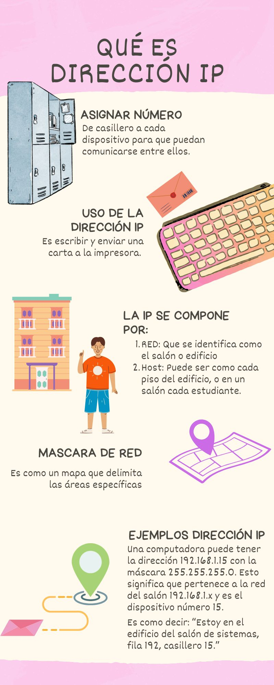
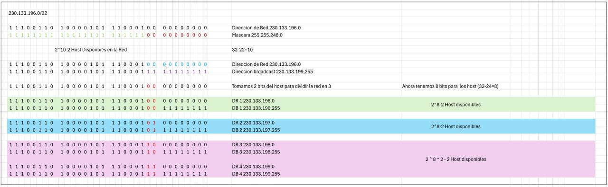
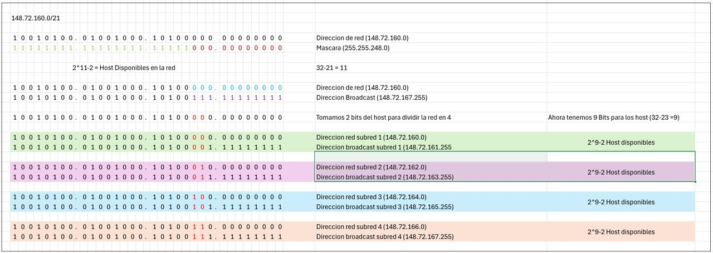

Visualización de AR - ¿Que es una IP?
Ver en AR (Android)
Recuerda instalar los servicios de Google Play para RA en tu dispositivo android
Lo sentimos, tu dispositivo no es compatible con esta visualización. :(

Como dividir una red en 3 subredes

Como dividir una red en 3 subredes
